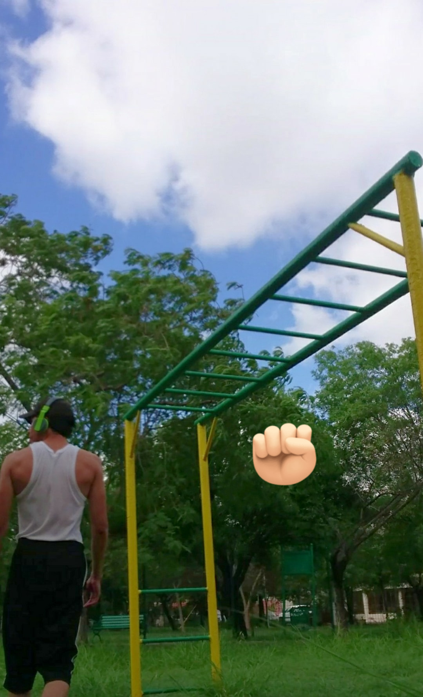
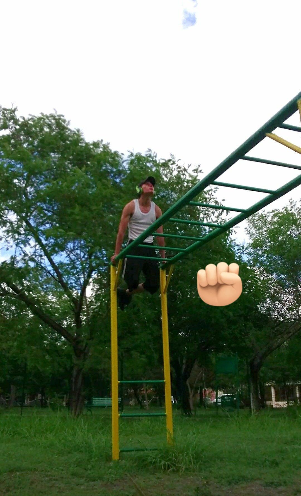
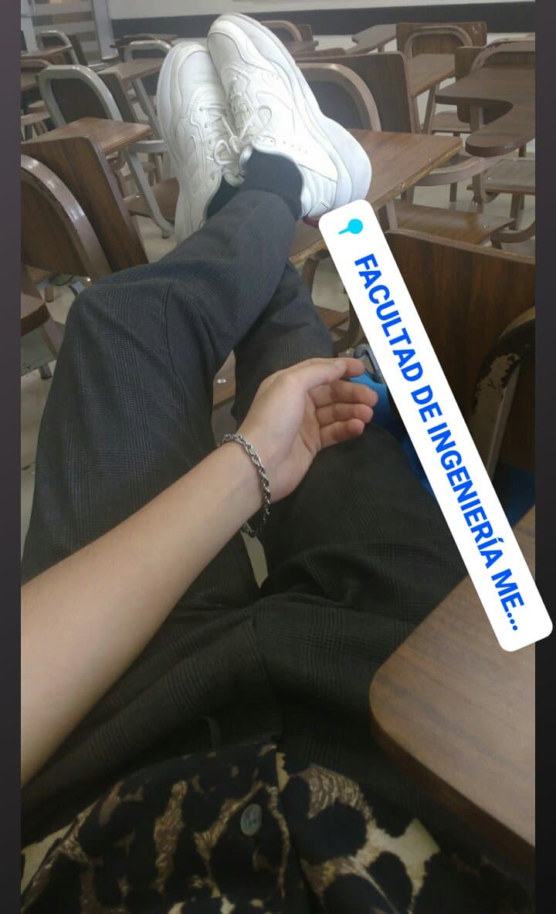
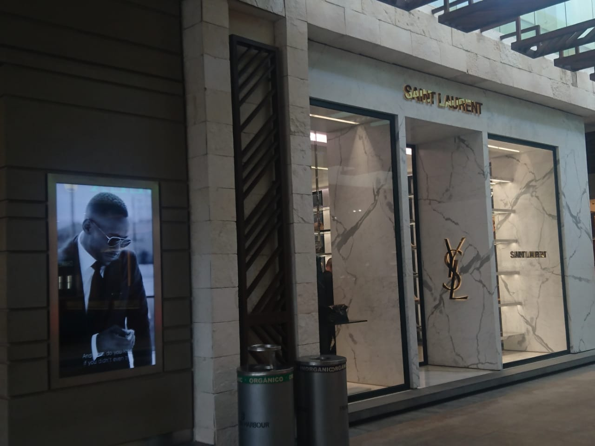
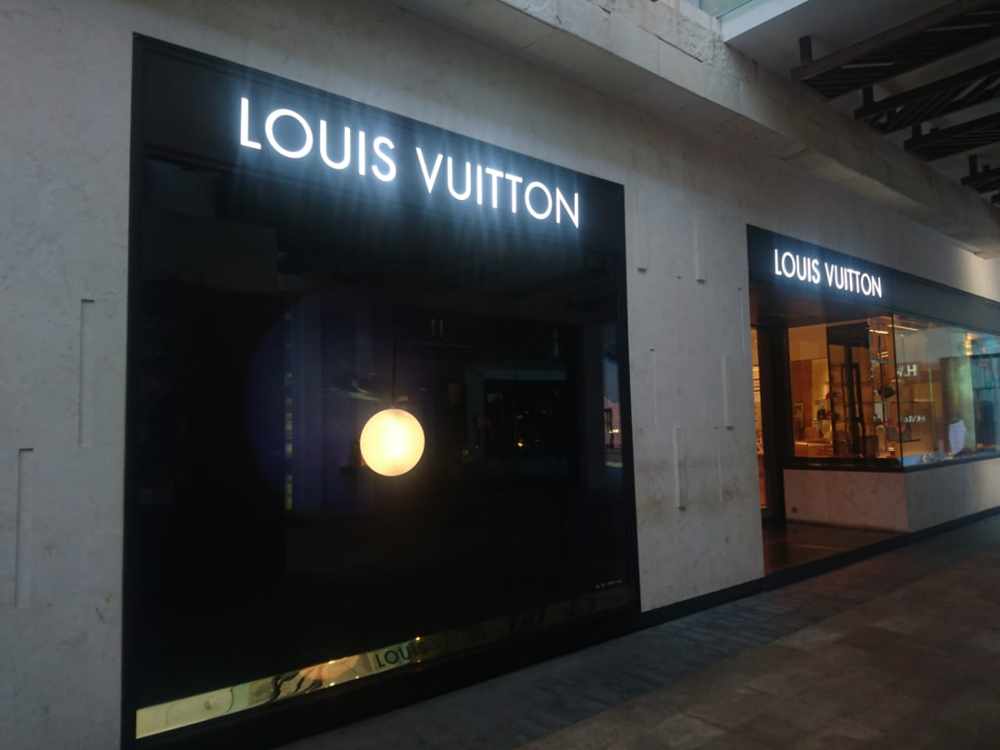
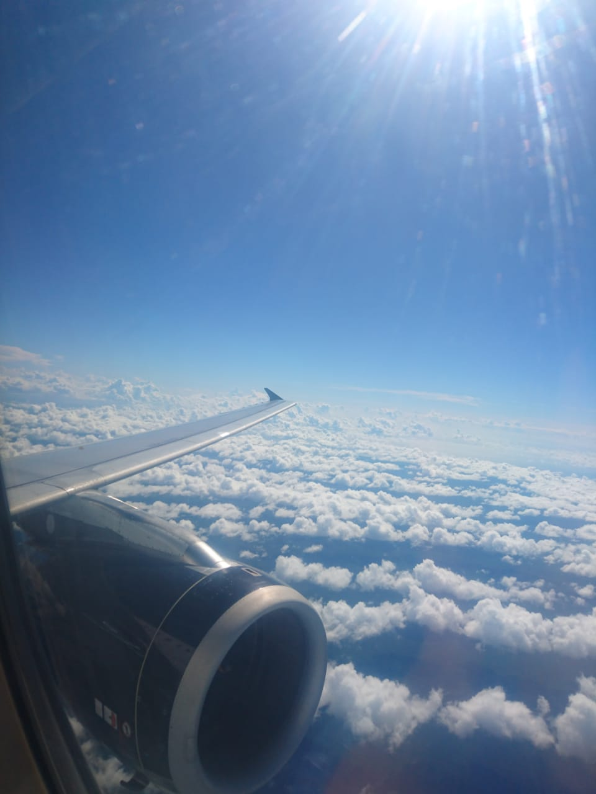

Mis pasatiempo(s)
Como ya mencioné en mi biografía, uno de los pasatiempos a los cuales le dedidico mucho tiempo es al
modelado 3D, además de distintos proyectos de Unity para hacer pruebas tales como comportamientos físicos de
objetos, pruebas de iluminación, formas nuevas y escenarios únicos.
Ciertamente no soy una persona con mucha imaginación pero me gusta mucho lo artístico; pienso que hacer esto
contribuye al desarrollo de mi creatividad.
Aquí algunos renders de lo que he hecho algún día:
Otro de mis pasatiempos es hacer ejercicio en el gimnasio o calistenia, o practicar algún deporte como el basketball, natación, etcétera. esto mantiene un equilibro saludable entre casi mi día a día con la computadora. también desde luego como sano y duermo bien.
 
Por último me gustaría mencionar que, como dije al inicio, me gusta mucho el arte; me gusta mucho los museos y la ropa; los lugares túristicos y la naturaleza. Me gusta mucho pasar el tiempo en estos lugares o haciendo lo que me gusta.
   